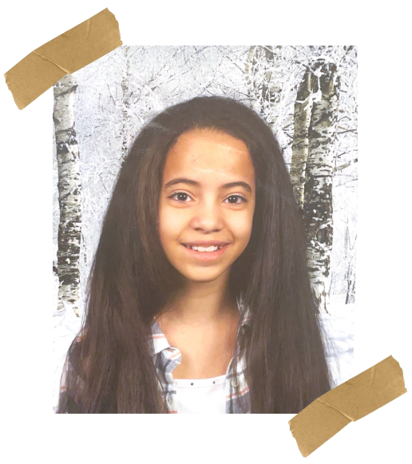
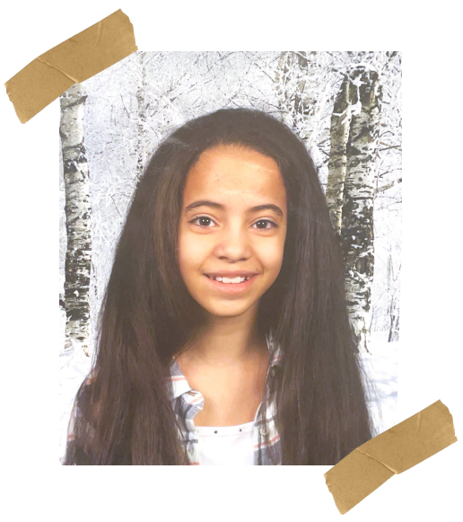
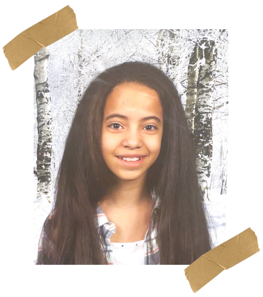
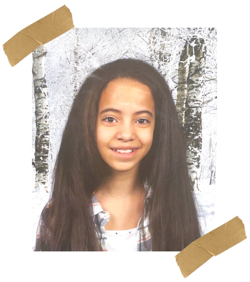

11 Years Old
In 2015, I was still trying to find my footing after the year before. Social anxiety made the world feel distant, but I found solace online, spending hours playing Minecraft and building connections with people who became my virtual friends. It was in these quiet moments that a silver lining began to emerge.
I ventured into creating YouTube videos, experimenting with editing and storytelling. It wasn’t just fun— it became a way to express myself and bring some light back into my days. Around this time, I also taught myself Photoshop and dived into video editing, skills that not only gave me purpose but also made me proud. In the middle of a tough year, these creative outlets became my way of turning sadness into something meaningful.